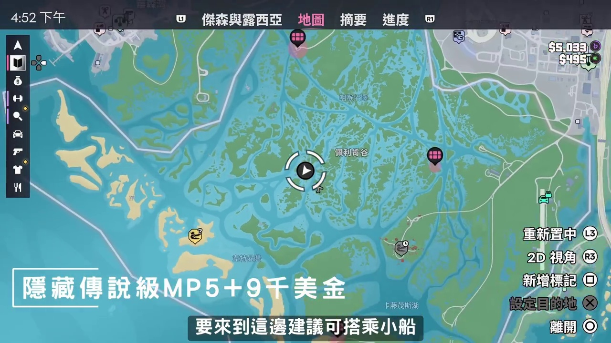
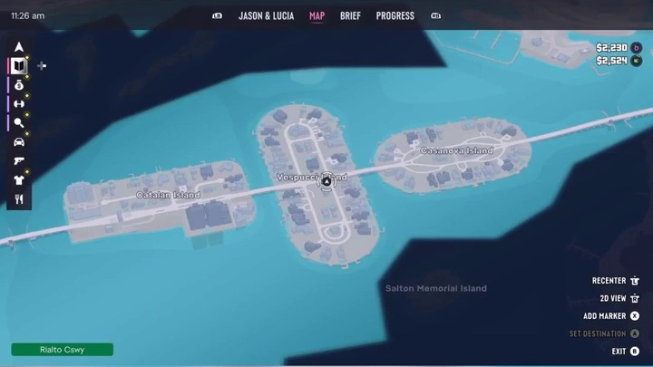
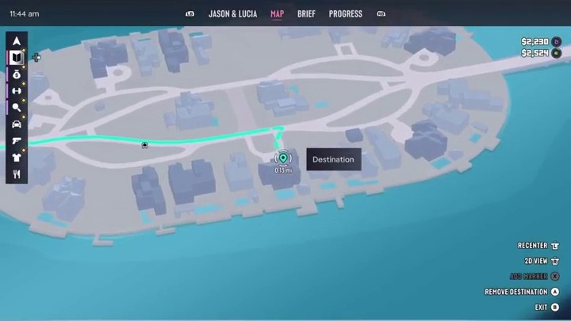
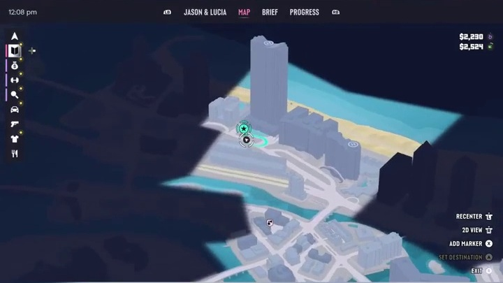
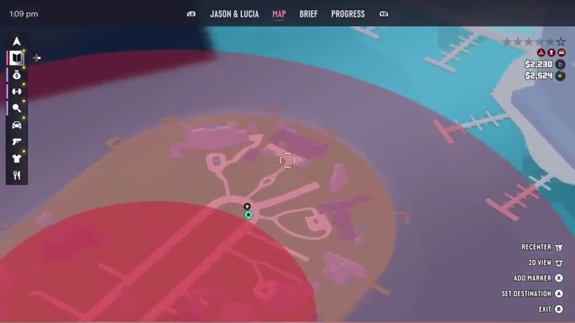

佩利肯谷螃蟹研究站
依据“给他爱艺术家”提供的视频整理 · 2026年11月21日
奖励
- 螃蟹屋特殊冲锋枪，视频称“传说级 MP5”。
- 保险箱现金约1,000美元。
- 价值约8,000美元的藏货袋。
金额按这篇视频记录；藏货价值与现金分别列出。
地点
佩利肯谷西侧的沼泽废弃设施。可乘船抵达，以两个废弃泳池和屋舍为现场参照。官方底图上的标记为大致区域，具体位置对照下面的原视频地图。

来源视频约00:07，可点击放大。
领取步骤
- 00:15 检查泳池对面的屋外电箱，接通设施电源。
- 00:24 进入主屋，从侧室地板线索确认电脑口令
CLEAVES。 - 00:35 回电脑处登录，随后按提示处理螃蟹过场。
- 00:52 用
0072 开保险箱，拿现金并读出门禁码。 - 01:06 返回泳池，经左侧铁门前往隐蔽小屋。
- 01:08 输入
0212，进入后取枪与藏货袋。
电脑口令以视频画面核对，未采用自动字幕误识别的单词。
四处豪车位置
来源：游Qia，视频约135秒。车型俗称按视频记录。
前置提醒：视频末尾说部分取车操作需要第三章工具；无追踪器车辆登记到名下，还涉及第二章的道具或地点。开走与登记是两件事。
维斯普奇岛 宝石红跑车
00:10至00:50。到岛中部住宅，按视频绕行翻墙进入车库。视频称钥匙在车内。
在地图中定位
卡萨诺瓦岛 金色SUV
00:55至01:05。去相邻岛屿南侧的导航目标住宅，进车库找金色豪华SUV。
在地图中定位
华盛顿海滩 金色跑车
01:10至01:30。找北侧高楼，从建筑右侧车辆坡道上行到车库。
在地图中定位
海星岛北侧豪宅 可变车库
01:35至02:00。进北侧豪宅，认门前大喷泉，查看旁边车库。视频出现大G和跑车，车型可能变化。
在地图中定位
Don Gone 销毁车辆前的防错过备注
来源：小红书作者🦉的图文笔记，包含第一章后期剧情。
Swamped 之后进入 Don Gone 时，先打开 Donnie 那辆 '85 Blista 的后备箱，取得 Donnie's H&L .38 左轮，再处理销毁车辆的目标。
来源称直接销毁会错过本周目这把专属左轮；建议任务前留手动存档。该任务尚未进入现有1至70步编号，备注单独保留，不插入无关步骤。